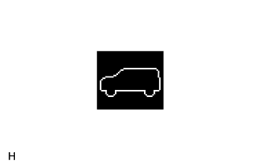

AIR SUSPENSION SYSTEM > ON-VEHICLE INSPECTION |
| 1. INSPECT HEIGHT CONTROL INDICATOR |
|  |
Turn the engine switch on (IG) and check the height control indicator on the combination meter.
| 2. INSPECT VEHICLE HEIGHT SELECTION |
Start the engine.
Using the height control switch, check the vehicle height adjustment amount and vehicle height adjustment time for each vehicle height mode.
| Mode Transition | Operation Details | Vehicle Height Adjustment Time |
| N mode to HI mode | From when "up" on height control switch pressed and control begins to when vehicle height is adjusted to HI mode | Approximately 20 seconds |
| HI mode to N mode | From when "down" on height control switch pressed and control begins to when vehicle height is adjusted to N mode | Approximately 20 seconds |
| N mode to LO mode | From when "down" on height control switch pressed and control begins to when vehicle height is adjusted to LO mode | Approximately 20 seconds |
| LO mode to N mode | From when "up" on height control switch pressed and control begins to when vehicle height is adjusted to N mode | Approximately 20 seconds |
| 3. INSPECT AUTO-LEVELING FUNCTION |
Unload the vehicle.
Start the engine.
Select N mode.
Check that the N mode light blinks and then remains on.
Turn the engine switch off and wait for 60 seconds or more.
Load the vehicle with 4 people (2 in the front seats and 2 in the rear seats).
Start the engine and inspect the vehicle height adjustment time.
With the engine running, wait for 60 seconds to discharge compressed air from the pneumatic cylinder assembly.
Turn the engine switch off and wait for 60 seconds or more.
Unload the vehicle.
Start the engine and inspect the vehicle height adjustment time.